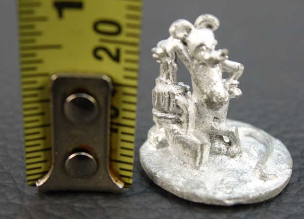
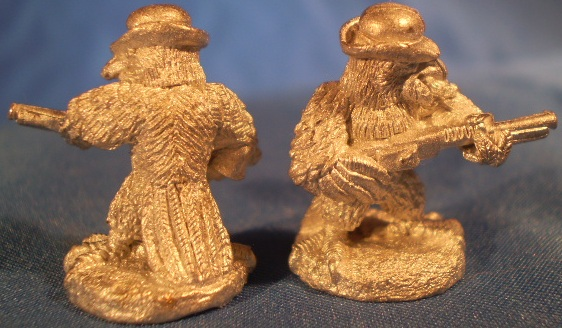

SE
Sea-Envy
2023-06-18 05:11 UTC
#1
Squirrel with a Gun - Official Trailer | Summer of Gaming 2023 - YouTube
I think any lawyer could prove that Squirl with a Gun is just copy of Gun Rat
Squirrel with a Gun - Official Trailer | Summer of Gaming 2023 - YouTube
I think any lawyer could prove that Squirl with a Gun is just copy of Gun Rat
I wouldn’t start down that road if I were you. I’ve still got this TOON miniatures that Steve Jackson Games released in 1985, so more than 35 years older than Gun Rat.

The old Critter Commandos game had an entire range of RATZI troops.
I thought there were some in the Macho Women With Guns range, but apparently I’m conflating them with the Crow With A Machinegun.

Regardless, other people have much better pre-existing claims to the concept of “rat with gun” than GTG, and if you want to extend it to “rodent with gun” to encapsulate squirrels the situation’s even worse. I can remember armed beaver minis from the 1970s, and there’s multiple ranges of gun-toting rabbits - one of them in Star Wars stormtrooper armor.
Besides, going by what he’s said Adam pretty much wants nothing to do with the concept. 
Wow, Sentinels has a lot of companies they need to sue.
I think you’re confusing them with Palladium. Or TSR. Or Games Workshop.
Thankfully they are none of them.
Yeah, don’t forget there’s comic book characters out there like “the Wraith, but a dude”, “Tachyon, but a dude and not even gay” and “palette-swapped Captain Cosmic”!
I can’t decide if Dude-Wraith is a ref to the Lunar Paladin or Night-Flying-Mammal Man.
It’s really weird how the “Parse, but a guy with stupid gimmick arrows” character was also originally a wannabe knockoff of Night-Flying-Mammal Man with his own version of the Night-Flying-Mammal Cave, the Night-Flying-Mammal Plane, the Night-Flying-Mammal Boat, the Night-Flying-Mammal signal, etc. It’s like that company was trying to rip themselves off or something.
Still better than the lame “Parse, but an angsty guy with guns” character at the Competition, though. The Skull-Wearing Disciplinarian got old real quick and briefly turning him into a “dude Fanatic” didn’t help any.
EDIT: And as long as I’m at it with this absurdity, here’s a better image of that TOON fig and stats for Deadeye Mouse, an anthropomorphic cartoon mouse with a gun.
EDIT: Link fixed.
The stats ought to proxy for Gun Rat just fine, although you’ll need to make up your own background. Maybe it fell in some isoflux alpha while gnawing on a cheese-flavored Oblivaeon shard it got as a prize for winning the “Actual Vermin Deathmatch Championship” at the Bloodsworn Colosseum or something. Wager Master was probably involved somewhere too. One presumes he’d have the Guise Cat as his nemesis in the card game.
While we’re on this topic, I’ll mention that there’s a DC character called Tempest (created before Sentinel’s), and a TV show called Captain Cosmic (also created before Sentinel’s), as well as another show called Kid Cosmic (created after Sentinel’s).
I refuse to be tempted into doing stats for Tuna Sandwich the Precognitive Cat from Kid Cosmic. Guise Cat is enough.
Also, that show has a nine year old kid in the lead as well as a four year old size-changer. If that’s okay these days can we please have our teen sidekick characters back in comics? Child endangerment is clearly no longer a concern.
Is that why they disappeared? I thought it was more of a change of target demographic.
I mean, I think that it’s kinda both. In the Silver Age, teen sidekicks weren’t really in much danger, as Silver Age villains weren’t very dangerous. But then the gritty years came, and they weren’t “serious” and “mature” enough. (Plus child endangerment actually became a justifiable concern, where before, it wasn’t.)
Personally, though, I do think it’s more of your reason, @skywhale. Plus vigilantism is illegal anyway, so if the kid’s consenting, it’s not the most handwavey/illogical/unrealistic/morally-dubious thing about comics.
Case in point: Golden and Silver Age Frail-Midwestern-Bird-Boy fought alongside Black-Wearing-Aerial-Rodent-Man every issue, using his circus acrobatics skills and handy slingshot, and nothing terribly bad happened to him.
Of course, times and comics eventually changed, and bad things did begin happening to sidekicks (and most everyone else too). For an example, see the second Frail-Midwestern-Bird-Boy, Schmason Schmodd.
Definitely a bit of both reasons, although given how well supers cartoons with young-to-very young protags have done over the years I really wonder if the comic publishers badly misunderstood how much audience demand there was for kid heroes that were more relatable to kid readers. I don’t recall anyone ever making a convincing argument that teen sidekicks actually hurt sales.
Going by more modern animated supershows (including stuff like Ben 10 and Danny Phantom and Moon Girl) maybe the mistake was in doing books where the kids were sidekicks rather than making them the heroic leads themselves. Your audience will age out over time, but that doesn’t mean you shouldn’t keep trying to grab new young readers to replace them.
Neither of the Big Two has ever been great about identifying what their readers (and potential readers) actually want, at least IMO. A lesson for GTG to recall when resisting the no doubt overwhelming demand for more Gun Rat.
“Schmason Schmodd” being all he could say after being hit with a schmowbar.
 “modern”
“modern”
I do get your point, though. A more modern example may be Spiderverse.
I did say “more modern” there, as opposed to the superhero shows of the mid-90s and before. Some of them had sidekicks, but the leads were adults. Powerpuff Girls (which shares a creator with Kid Cosmic, I note) might have been the first radical divergence from that formula that really caught on, although I might be forgetting something (maybe some nick live action show, I paid little attention to those). So post-98, at least. Since then kid hero shows and even films have been a steadily growing subgenre.
There’s certainly no more modern example than Moon Girl, anyway.
I guess I have no real reference for what you’re referring to, as post-98 describes everything since I was 1. I do wonder, though, if the replacement has been in large part a shift to kids on their own as opposed to supporting an adult - like Teen Titans seeming to be a bigger focus. You could see yourself as Robin, helping Batman do something he could probably do on his own, or you could see yourself as Robin, leading his own team of superheroes.
I’d agree with this. Teen heroes haven’t gone away. Every other Spiderman show is about him still being in high school, as are about a third of all X-Men shows. In comics, there are new teen hero series every few years; hell, Ms. Marvel is one of the handful of breakout heroes of the last ten years.
The big shift is away from teen heroes who are sidekicks to adult heroes, and towards teen heroes who are either doing their own thing, or occasionally being mentored as training for adulthood. To use the above example, Kamala interacts with adult superheroes, occasionally gets training or help from them, and also they frequently worry about her, but she’s not existing as a sidekick to Carol Danvers.
Actually, both DC and Marvel have a character called Tempest!
C&A were a little less careful about using “taken” names in those days.
Right. It’s become the norm for young heroes not to go through a stretch as a sidekick where they largely exist as an adjunct to an adult hero. They might have an adult mentor figure, but not one who dominates the story the way the old hero/sidekick worked. There were some exceptions in the days of yore - the Legion of Super-Heroes is probably the oldest and most prominent all-teen, non-sidekick group, and of course Spider-Man and the original X-Men as mentioned - but most young heroes got into the biz through sidekicking, not being their own hero.
It’s been a noticeable change of tone if you’ve been reading comics (or watching shows) since the dim past of the 1960s - and one for the better, IMO. Sidekicks were always an awkward subject if you stopped to think about them much, and they were frequently horribly written, which is why the concept is a popular target for deconstruction.
Lot fewer super-pets these days too, at least ones being played straight. You still see the legacy ones showing up pretty often, but often in humorous tongue-in-cheek ways or savage deconstructions (eg Wonder Dog from Super Friends). New ones don’t seem to crop up often, and almost never as something taken seriously. Bit too gonzo, I guess.
Unsure how to feel about this now that I’ve heard the episode. 
That’s what you call making a reference to something no one knows about because you forgot where it came from after 24 hours XD
On a (slightly  ) more serious note, I just saw an announcement of a new Marvel character being introduced in What If…? Dark: Moon Knight #1 named … Luminary!
) more serious note, I just saw an announcement of a new Marvel character being introduced in What If…? Dark: Moon Knight #1 named … Luminary! 
Gasp, what? Do the Big Two (real) companies not even check to see if a name is already taken by a fake comic publisher any more? (Or, y’know, a tabletop game publisher.)
DC has a Luminary as well, who was also called Shard at some point. AFAIK he appeared only once in a single panel in JSA, as one of six corpses Johnny Sorrow turned most of the “Seven Shadows” super-group into. They were a “created in the modern day” team that supposedly operated in Golden Age Chicago in 1944, and were pretty much made up solely to be killed - off panel no less. A narrative trick I truly despise, I might add.
Digging just a little deeper, Luminary is an android superhero from City of Heroes MMORPG, and appeared in three issues of the short-lived comic spinoff. I think I punched her evil duplicate Nightstar one time, back during my housemates’ brief flirtation with the game.
in the comics adapted from Batman the Animated series there was a story where Robin (Tim Drake) was depressed that he only fights psychos and that there are no goofy theme villains anymore and Nightwing (Dick Grayson) tried pretending to be a lion themed villain.
Back in my Champions days one of our GMs threw a lion-themed villain at us whose supranym was “the Mane Enemy.” I still haven’t fully recovered.